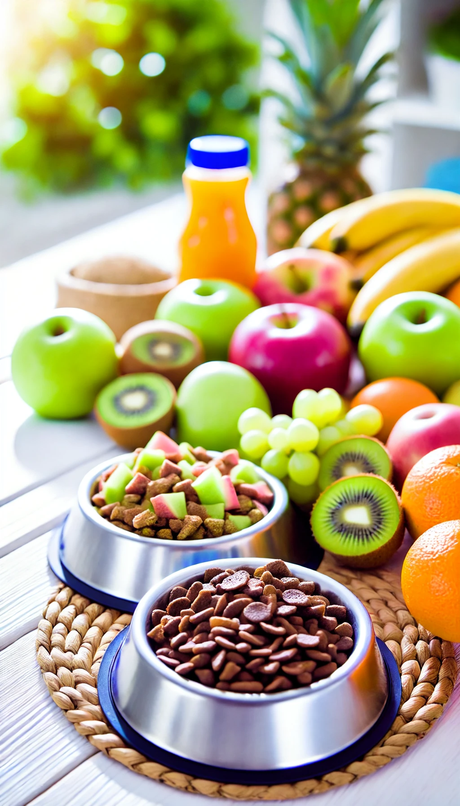
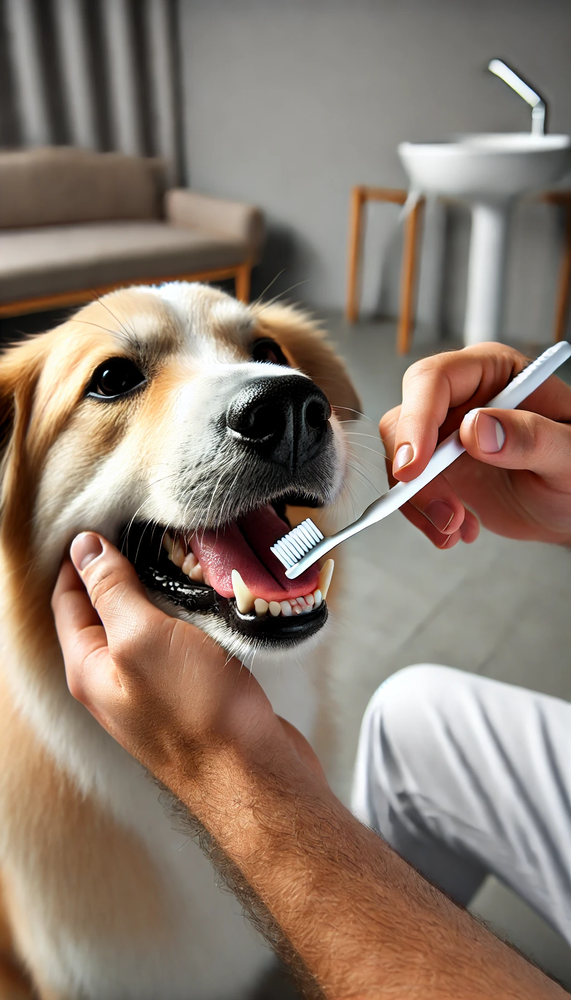

Blog - Dicas de Saúde Animal
Cuide melhor do seu pet com nossas dicas e informações exclusivas.

Alimentação Saudável
Descubra quais alimentos são ideais para a dieta do seu pet e mantenha-o saudável e forte.
Cuidados no Verão
Veja como proteger seu pet do calor e mantê-lo confortável durante o verão.
Exercícios e Brincadeiras
Ideias de atividades para manter seu pet ativo, saudável e feliz.

Cuidados com a Saúde Bucal
Dicas para manter a higiene bucal do seu pet e prevenir problemas dentários.
Importância do Banho e Tosa
Manter a higiene do seu pet em dia é essencial para sua saúde e bem-estar.

Importância das Vacinas
Vacinas em dia são essenciais para prevenir doenças graves no seu pet.